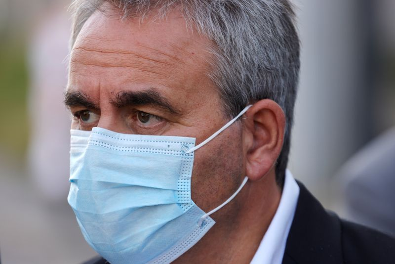

Former Sarkozy minister Bertrand says will run for president in 2022
PARIS (Reuters) – Xavier Bertrand, a former minister who now leads the Hauts-de-France region in northern France, said in a magazine interview he would run for president in 2022.
Bertrand, a conservative who served as health minister between 2005 and 2007 in the government of Nicolas Sarkozy, told French weekly Le Point: 'Yes, I will be a candidate… I am totally determined.In view of France’s current situation I think this is my duty.'
Opinion polls so far indicate that Marine Le Pen, leader of the far-right National Rally party, will be Emmanuel Macron’s main challenger in the election next year, provided Macron seeks a second mandate.
(Reporting by Dominique Vidalon; Editing by Alex Richardson)
Posted On: 2021-03-24T00:00:00

Content Date: 2021-03-24
Download Date: 2021-04-17
Document ID: L0C04A63Q